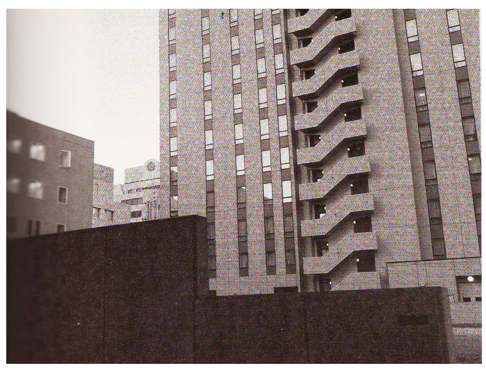

대기 원근법(aerial perspective)은 배경에 있는 모든 물체들이 늘어서 있게 보이도록 만드는 사진 테크닉 용어다. 안개가 잔뜩 낀 날씨에 산들이 겹겹이 늘어서 있는 풍경을 망원렌즈를 활용해 촬영하면 각 산들의 원근감이 강조되어 표현될 수 있다.
대기 원근법은 카메라에 가까운 대상을 원경에 있는 피사체보다 더 어둡도록 연출해 깊이를 더해주는 방식이다.
망원렌즈를 사용하여 산을 찍으면, 마치 산이 빼곡하게 들어선 것처럼 표현할 수 있다. 안개가 낀 날 약간 추운 겨울이 대기 원근법을 제대로 활용할 수 잇는 최적의 날씨이긴 하지만. 다른 계절에도 비슷한 효과를 만들어 낼 수 있다. ( 사진 39 ) 는 마원렌즈를 활용해 갯벌, 작은 산, 바다가 층층이 겹쳐서 보이는 대기 원근법을 보여준다.
(사진 40) 은 앞부분에 있는 건물 벽이 섀도에 묻혀서 어둡고 배경으로 갈수록 점점 밝아진다. 중첩되는 건물사이로 다른 건물들이 배치되어 상대적으로 아주 작은 크기로 보인다. 이런 효과로 인해 우리 눈은 자연스럽게 각 건물들의 위치가 거리에 따라 배치되었음을 알 수 있고. 근경에서부터 원경으로 이어지는 시각적 흐름을 맛볼 수 있다.
사진 40 일본 아키타 : 2012
앞부분에 있는 건물벽이 새도에 묻혀서 어둡고 원경으로 갈수록 점점 밝아진다. 중첩되는 건물사이로 또다른 건물들이 배치되어 상대적으로 아주 작은 크기로 보인다.
[참고문헌]
[1] 원하는 사진을 어떻게 찍는가, 김성민, 소울메이트, 2015. 2. 9. p130
....
....
....
....
....
....
....